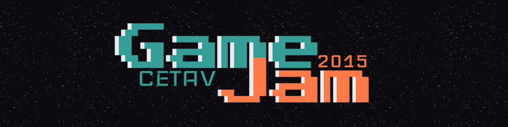

Mis Trabajos
-

JammingApp
Trabajo en clase del curso de JavaScript avanzado para practicar el tag de audio de HTML5. Utilizé el "Revealing Module Pattern" y los datos fueron tomados del API de Deezer.
Ver proyecto Código en Github -

CETAV - GameJam 2015
En este proyecto tuve la oportunidad, junto varios compañeros, de re-diseñar el sitio web de un evento que se llevó a cabo en el CETAV en el cual se realizaron 4 prototipos de videojuegos sobre cambio climático en 48 horas. Colaboré en la creación de contenido, wireframes y guías de estilo.
Ir al sitio web Código en Github -

Our Heritage - Sitio Web
Para promocionar el videojuego de "Our Heritage", mis compañeros del CETAV y yo creamos este sitio web, en el cual aplicamos la metodología de Scrum. El sitio es responsive y está disponible en 4 idiomas.
Ir al sitio web Código en Github